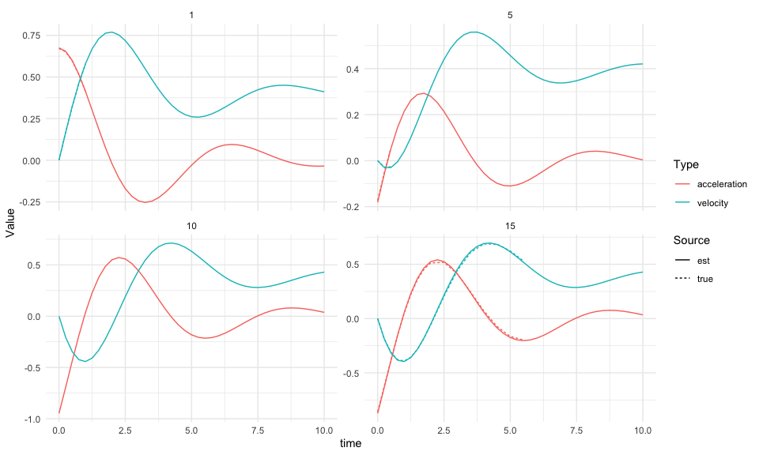

The JointODE package provides a unified framework for joint modeling of longitudinal biomarker measurements and time-to-event outcomes using ordinary differential equations (ODEs). This approach enables the simultaneous analysis of biomarker trajectories and their impact on survival outcomes.
Model Setup
Longitudinal Model
The observed biomarker measurements are modeled as: V_{ij}=m_i(T_{ij})+b_i+\varepsilon_{ij},\quad i=1,\ldots,n,\quad j=1,\ldots,n_i
where:
- V_{ij}: Observed biomarker value for subject i at time T_{ij}
- m_i(t): True underlying biomarker trajectory
- b_i\sim\mathcal{N}(0,\sigma_{b}^{2}): Subject-specific random intercept
- \varepsilon_{ij}\sim\mathcal{N}(0,\sigma_{e}^{2}): Measurement error
The biomarker trajectory evolution is characterized by the following second-order differential equation:
\ddot{m}_i(t) = f\big(m_i(t), \dot{m}_i(t), \mathbf{X}_i(t), t\big)
where f: \mathbb{R} \times \mathbb{R} \times \mathbb{R}^p \times \mathbb{R}^+ \to \mathbb{R} is a smooth function modeling the biomarker acceleration as a function of its current value m_i(t), velocity \dot{m}_i(t), time-varying covariates \mathbf{X}_i(t) \in \mathbb{R}^p, and time t.
Survival Model
The hazard function incorporates biomarker dynamics:
\lambda_i(t) = \lambda_{0}(t)\exp\left[\mathbf{m}_i(t)^{\top}\boldsymbol{\alpha}+\mathbf{W}_i^{\top}\boldsymbol{\phi}+b_{i}\right]
where:
- \lambda_{0}(t): Baseline hazard (e.g., Weibull, piecewise constant)
- \mathbf{m}_i(t)=\left(m_i(t), \dot{m}_i(t), \ddot{m}_i(t)\right)^{\top}: Biomarker value and derivatives
- \boldsymbol{\alpha}=(\alpha_0, \alpha_1, \alpha_2)^{\top}: Association parameters for value, velocity, and acceleration
- \mathbf{W}_i: Baseline covariates with coefficients \boldsymbol{\phi}
- b_i: Subject-specific random intercept
For detailed mathematical derivations including ODE formulation, likelihood construction, and EM algorithm specifics, see the technical documentation.
Installation
You can install the development version of JointODE from GitHub with:
# install.packages("pak")
pak::pak("ziyangg98/JointODE")Example
Here’s a basic example demonstrating typical usage:
library(JointODE)
#>
#> Attaching package: 'JointODE'
#> The following object is masked from 'package:stats':
#>
#> simulate
# Load example dataset
data(sim)
# Fit joint ODE model
fit <- JointODE(
longitudinal_formula = sim$formulas$longitudinal,
longitudinal_data = sim$data$longitudinal_data,
survival_formula = sim$formulas$survival,
survival_data = sim$data$survival_data,
parallel = TRUE
)
# Model summary
summary(fit)
#>
#> Call:
#> JointODE(longitudinal_formula = sim$formulas$longitudinal, longitudinal_data = sim$data$longitudinal_data,
#> survival_formula = sim$formulas$survival, survival_data = sim$data$survival_data,
#> parallel = TRUE)
#>
#> Variance components:
#> sigma_e sigma_b
#> 0.10101 0.09658
#>
#> Fixed effects:
#> Estimate Std. Error z value Pr(>|z|)
#> baseline:1 -3.177691 0.678258 -4.685 2.80e-06 ***
#> baseline:2 -2.697223 0.738452 -3.653 0.00026 ***
#> baseline:3 -2.271341 0.565821 -4.014 5.96e-05 ***
#> baseline:4 -1.936159 0.419073 -4.620 3.84e-06 ***
#> baseline:5 -1.678826 0.421595 -3.982 6.83e-05 ***
#> baseline:6 -2.380270 0.505616 -4.708 2.51e-06 ***
#> baseline:7 -0.976073 0.847994 -1.151 0.24972
#> baseline:8 -0.669168 1.153001 -0.580 0.56166
#> baseline:9 -0.692297 1.180008 -0.587 0.55741
#> hazard:alpha0 0.382982 0.149611 2.560 0.01047 *
#> hazard:alpha1 0.024502 0.670308 0.037 0.97084
#> hazard:alpha2 -0.515025 0.409202 -1.259 0.20817
#> hazard:phi1 0.351680 0.081931 4.292 1.77e-05 ***
#> hazard:phi2 -0.635422 0.081704 -7.777 7.42e-15 ***
#> longitudinal:beta1 -2.241476 0.130061 -17.234 < 2e-16 ***
#> longitudinal:beta2 -3.700008 0.246194 -15.029 < 2e-16 ***
#> longitudinal:beta3 -0.003293 0.011233 -0.293 0.76939
#> longitudinal:beta4 1.461423 0.087391 16.723 < 2e-16 ***
#> longitudinal:beta5 0.726582 0.043685 16.632 < 2e-16 ***
#> longitudinal:beta6 0.371125 0.022629 16.400 < 2e-16 ***
#> ---
#> Signif. codes: 0 '***' 0.001 '**' 0.01 '*' 0.05 '.' 0.1 ' ' 1
#>
#> ---
#> Log-likelihood: 2207.167 AIC: -4370.334 BIC: -4297.771
#> N = 200 Convergence: EM algorithm converged after 35 iterations
# Generate predictions
predictions <- predict(fit, times = seq(0, 5, by = 0.5))Visualization
library(ggplot2)
library(dplyr)
#>
#> Attaching package: 'dplyr'
#> The following objects are masked from 'package:stats':
#>
#> filter, lag
#> The following objects are masked from 'package:base':
#>
#> intersect, setdiff, setequal, union
library(tidyr)
# Prepare data
ids <- c(1, 5, 10, 15)
df <- lapply(ids, \(i) {
pred <- predictions[[i]]
obs <- filter(sim$data$longitudinal_data, id == i)
data.frame(
id = i, time = pred$times,
biomarker_est = pred$biomarker, velocity_est = pred$velocity,
acceleration_est = pred$acceleration, survival = pred$survival
) %>%
left_join(select(obs, time, v,
biomarker_true = biomarker,
velocity_true = velocity, acceleration_true = acceleration
), by = "time")
}) %>% bind_rows()
# Biomarker plot
ggplot(df, aes(x = time)) +
geom_line(aes(y = biomarker_est, color = "Estimated")) +
geom_line(
aes(y = biomarker_true, color = "True"), linetype = 2, na.rm = TRUE
) +
geom_point(aes(y = v, color = "Observed"), alpha = 0.7, na.rm = TRUE) +
facet_wrap(~id) +
theme_minimal() +
labs(y = "Biomarker", color = "")
# Dynamics plot
df %>%
pivot_longer(matches("(velocity|acceleration)_(est|true)"),
names_to = c("type", "source"), names_sep = "_"
) %>%
filter(!is.na(value)) %>%
ggplot(aes(x = time, y = value, color = type, linetype = source)) +
geom_line() +
facet_wrap(~id, scales = "free_y") +
theme_minimal() +
labs(y = "Value", color = "Type", linetype = "Source")
# Survival plot
ggplot(df, aes(x = time, y = survival, color = factor(id))) +
geom_line(linewidth = 1.2) +
theme_minimal() +
ylim(0, 1) +
labs(y = "Survival Probability", color = "Subject")
Code of Conduct
Please note that the JointODE project is released with a Contributor Code of Conduct. By contributing to this project, you agree to abide by its terms.